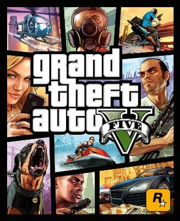

GTA V
Grand Theft Auto V (ook geschreven als GTA V of GTA 5) is het vijftiende computerspel uit de Grand Theft Auto-spellenreeks van Rockstar Games. Het spel is ontwikkeld door Rockstar North en kwam op 17 september 2013 uit voor de PlayStation 3 en Xbox 360. Het spel maakt gebruik van de door Rockstar Games ontwikkelde RAGE-engine, die ook voor de voorloper van Grand Theft Auto V, Grand Theft Auto IV, werd gebruikt.[1]
De ontwikkelings- en marketingkosten van het spel bedroegen tussen de 200 en 265 miljoen euro, wat Grand Theft Auto V het duurste spel ooit maakt en het op één na duurste entertainmentproduct, enkel voorafgegaan door Pirates of the Caribbean: At World's End met een budget van rond de 300 miljoen euro.[2] Op de eerste dag van release bracht het spel 800 miljoen op; na drie dagen bereikte GTA V de één miljard dollargrens, een recordgetal.
Grand Theft Auto V , beter bekend als GTA Online , bestaat uit open wereld sessies gebaseerd op dezelfde kaart als Grand Theft Auto V . Sessions zijn beperkt tot 16 spelers op PlayStation 3 en Xbox 360 en uitgebreid tot 30 spelers (met 2 extra spaties voor de toeschouwers) op de PlayStation 4 , Xbox One en PC .
Spelers mogen rond te reizen en interactie met de kaart op wil en kunnen deelnemen aan een groot aantal gameplay-activiteiten, met inbegrip van aanvallen op de plaatselijke bendes, beroven gepantserde vrachtwagens en uitdagende andere spelers om Impromptu Races . Een aantal van deze open wereld activiteiten zijn uniek voor de multiplayer-modus van het spel, terwijl anderen worden gedeeld met GTA V . Spelers kunnen ook de aankoop van onroerend goed, auto's, kleding, vliegtuigen, maskers en wapens voor hun karakter.
Afgezien van de Free Roam aspect, GTA Online bevat ook een aantal gelokaliseerde, meer traditionele multiplayer spelmodi bekend als Jobs dat in afzonderlijke sessies onafhankelijk van de grotere open wereld worden gespeeld; spelers deelnemen in deze banen niet zichtbaar is en niet kan communiceren met spelers bezetten de open wereld, zelfs als ze dezelfde locatie bewonen tegelijk. Deze banen omvatten deathmatches, races, sportieve activiteiten en horde-achtige survival games. Ten slotte kunnen spelers ook ondernemen coöperatieve missies voor diverse misdrijven eindbazen, van wie de meesten ook verschijningen in maken GTA V story 's.Het aantal actoren en de grootte van het gebied waarover zij in deze speltypen varieert afhankelijk van de activiteit en functie zelf.
Als spelers vooruitgang en verhoging van de rang van hun karakter, zal meer punten en banen worden ontgrendeld voor hen te kopen en af te spelen. Ook opgenomen in GTA Online is de Content Creator , een development tool waarmee spelers maken en publiceren hun eigen races, deathmatches, en andere concurrerende gamemodes.
Extra beloningen worden gegeven, zoals gratis wapens en dubbele RP, als de speler is aangesloten op de Rockstar Social Club en een speciaal evenement wordt gehost of een speciale aanbieding wordt ingewisseld door de speler. Speciale bonussen zijn ook beschikbaar voor spelers die Rank 100 en daarbuiten te bereiken.
